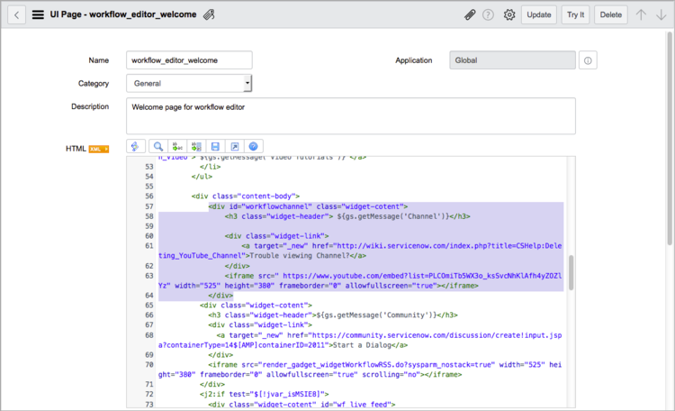

Using the Workflow Editor
| |
Note: This article applies to Fuji and earlier releases. For more current information, see Workflow Editor at http://docs.servicenow.com
The ServiceNow Wiki is no longer being updated. Visit http://docs.servicenow.com for the latest product documentation. |
Contents
1 Overview
The Workflow Editor is an interface for creating and modifying workflows by arranging and connecting activities to drive processes. You can manage multiple workflows in the same screen, create custom workflow activities, and use existing activities as data sources. Users with the workflow_creator role can create workflows, and users with the workflow_admin roles can create, modify, delete, and publish workflows.
| |
Note: The Workflow Editor replaces the Graphical Workflow Editor, starting with the Fuji release. |
2 Accessing the Workflow Editor
To open the Workflow Editor, navigate to Workflow > Workflow Editor.
3 User Interface Elements
The workflow designer user interface is divided into the following areas:
- Canvas tabs: Contains tabs for accessing workflows being edited or created.
- Title bar: Displays the workflow name and status. Provides a menu and controls for configuring, testing, and validating workflows.
- Canvas: Provides the working surface for creating new workflows or editing existing ones.
- Palette: Contains all available workflow activities and existing workflows you can use as subflows. Drag activities and subflows to the canvas to create new workflows or edit existing ones.
{kind=link}
3.1 Canvas Tabs
Use these tabs to move between open workflows in the canvas and to access ServiceNow resources. The editor opens with the Welcome tab, which displays related help links and videos for basic workflows and Orchestration, when Orchestration is activated. From this tab, you can open articles in the ServiceNow Knowledge Base, user community conversations, live feed postings, and user documentation.
| |
Note: If your organization blocks users from viewing YouTube videos, you can remove the video channel from either the workflow or Orchestration welcome pages using the procedure in Removing a Blocked Video Channel. |
{kind=link}
3.2 Title Bar
When a workflow is opened in the canvas, the title bar displays the workflow title in bold and the workflow status in italics. Possible states are Checked out by <name> and Published.
{kind=link}
In the right of the title bar are controls for displaying and managing the workflow.
- Workflow Properties
 : Opens the current workflow's properties form.
: Opens the current workflow's properties form. - Start : Runs the workflow. This control is only available for workflows running on the Global table that are accessible from all application scopes. To test workflows that are on other tables, insert a record into that table that meets the condition of the workflow.
- Validate : Tests the workflow prior to publication. Validation detects potential problems that can prevent the workflow from publishing or cause the workflow to fail. For more information, see Workflow Validation.
- Help : Opens documentation to help you create the workflow.
{kind=link}
{kind=link}
{kind=link}
3.2.1 Workflow Menu
Click the menu icon in the title bar for additional options to configure the workflow.
{kind=link}
The following menu options are available:
- New Workflow: Creates a new workflow.
- Open Existing: Opens another existing workflow.
- Copy: Creates a duplicate of the workflow with a different name.
- Publish: Makes the personal workflow version public, overwriting the current published workflow version. This option is only available for checked out workflows.
- Checkout: Creates a personal version of the workflow for you, which you can edit. This option is only available for published workflows.
- Delete: Deletes the workflow. You cannot delete workflows that have contexts associated with them.
- Set Inactive: Inactivates the workflow so that it cannot be used.
- Expand Transitions: Redraws the transitions so that they do not overlap when they leave the activity condition.
- Start Workflow: Starts a test run of the current workflow.
- Validate Workflow: Runs validation tests on your workflow prior to publication. Use this validation to detect potential problems that can prevent the workflow from publishing or cause the workflow to fail. For more information, see Workflow Validation.
- Collapse Transitions: Redraws the transitions so they overlap when they leave the activity condition.
- Properties: Opens the Workflow Properties form, which defines the workflow's attributes.
- Edit Inputs: Opens the Workflow Inputs list of variables that the workflow can accept when used as a subflow. For more information, see Using Subflows.
- Edit Stages: Opens the Workflow Stages list. For more information, see Workflow Stages.
3.3 Canvas
The drawing canvas is where you add activities and configure transitions for checked out workflows. Add an activity by dragging it from the palette to the workflow in the canvas. For more information, see Creating a Workflow.
3.4 Palette
The default palette contains workflow activities and existing workflows you can use as subflows. The basic workflow palette contains these tabs:
- Workflows: Displays existing workflows and provides controls for creating new ones.
- Core: Displays baseline workflow activities available to all systems and Orchestration activities, when Orchestration is active.
| |
Note: Orchestration also adds tabs to the palette for creating and managing custom workflow activities. For details, see Orchestration Activity Designer. |
3.4.1 Workflows
The Workflows tab lists existing workflows that you can edit or use as subflows in other workflows. Click a workflow to open it in the canvas. To add a workflow as a subflow, drag it to another workflow in the canvas. Click the + icon to create a new workflow.
{kind=link}
3.4.2 Core
The Core tab contains the standard activities available by default to all workflows and any activities purchased with Orchestration, organized by category. Click the arrow icons to expand or collapse the activity lists under each category. To add an activity to a workflow, drag it to the canvas. For more information, see Using Workflow Activities.
{kind=link}
4 Removing a Blocked Video Channel
The instructional videos on the workflow and Orchestration welcome pages are hosted on YouTube. If your organization blocks users from downloading videos from this site, you can remove the channel from either welcome page using this procedure.
- Navigate to System UI > UI Pages.
- Open the workflow_editor_welcome record.
- From the HTML field, remove the lines shown here for one or both of the welcome pages and update the record.
- Note: If you edit this record, it will not be updated in future releases.
- 
{kind=link}
4.1 Basic Workflow
<div id = "workflowchannel" class="widget-cotent">
<h3 class="widget-header"> ${gs.getMessage('Channel')}</h3>
<div class="widget-link">
<a target="_new" href="http://wiki.servicenow.com/index.php?title=CSHelp:Deleting_YouTube_Channel">Trouble viewing Channel?</a>
</div>
<iframe src=" https://www.youtube.com/embed?list=PLCOmiTb5WX3o_ksSvcNhKlAfh4yZOZlYz" width="525" height="380" frameborder="0" allowfullscreen="true"></iframe>
</div>
4.2 Orchestration
<div id="orcheschannel" class="widget-cotent">
<h3 class="widget-header"> ${gs.getMessage('Channel')}</h3>
<div class="widget-link">
<a target="_new" href="http://wiki.servicenow.com/index.php?title=CSHelp:Deleting_YouTube_Channel">Trouble viewing Channel?</a>
</div>
<iframe src="https://www.youtube.com/embed?list=PLCOmiTb5WX3o6xHIFhZC0FRue4Uwlz0Xm" width="525" height="380" frameborder="0" allowfullscreen="true"></iframe>
</div>